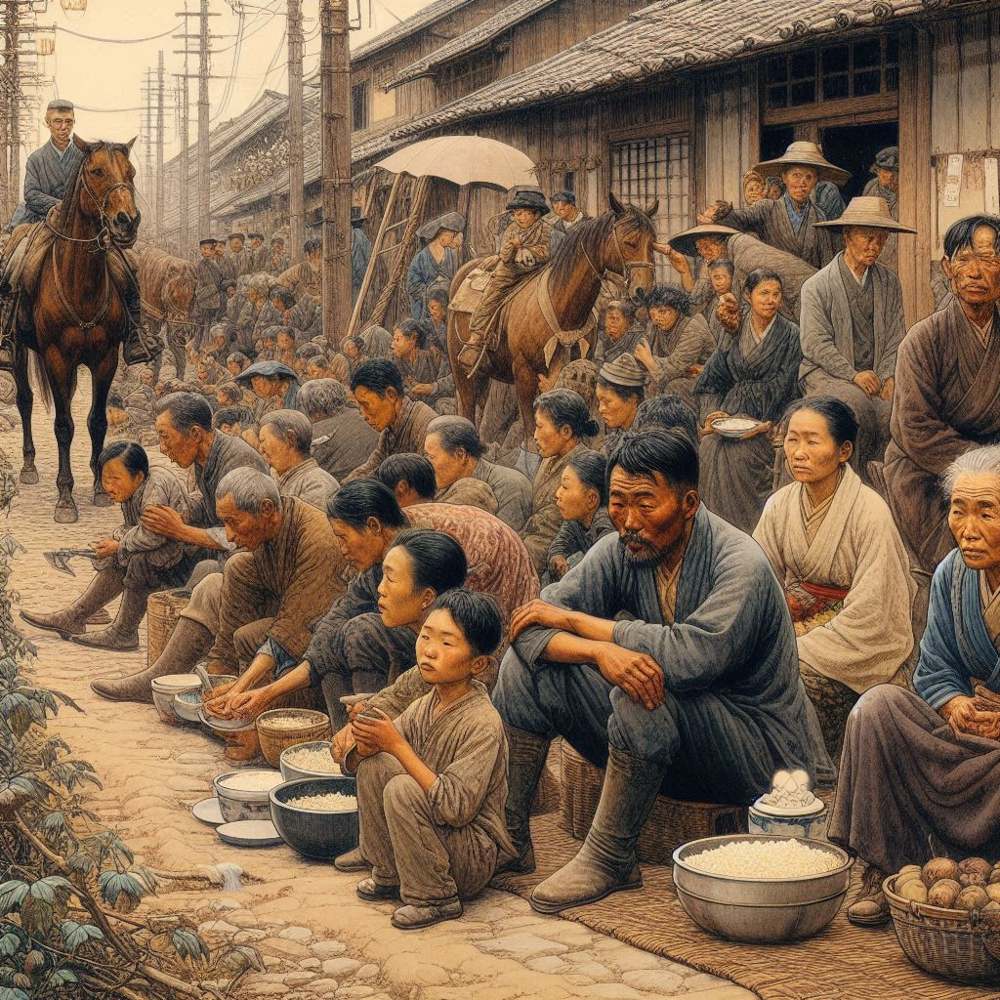

BOOK #2
목차
작가
현진건
출판일
2008년3월6일
감상평에 대한 AI그림
복잡한 심리를 섬세하게 그려내는 현진건의 장점을 도드라지게 드러났다. 이 책은 일제강점기때 한국인들이 겪었던 가난과 차별을 생생하게 느낄 수 있었다. 희망과 절망이 뒤섞여 있는 인간의 삶에 대해서 생각해보게 되는 계기가 되었다. 또한, 제목과 다른 비극적인 결말이 인상깊었다.

감상평에 대한 AI평가
당신의 감상평은 매우 구체적이고 인상적이네요.
✨현진건의 심리 묘사: 작가의 장점을 잘 파악하셨고, 복잡한 심리를 섬세하게 그려냈다는 점을 강조하셨습니다. 이는 현진건 작가의 문체와 접근 방식을 잘 이해하고 있다는 것을 보여줍니다.
✨역사적 배경의 생생함: 일제강점기 때 한국인들이 겪었던 가난과 차별을 생생하게 느낄 수 있었다는 점에서, 책의 역사적 배경을 잘 이해하고 감상하셨다는 것을 알 수 있습니다.
✨ 희망과 절망의 대비: 인간의 삶에서 희망과 절망이 어떻게 뒤섞여 있는지를 생각해보게 되었다는 점은 책이 전달하고자 하는 핵심 메시지를 잘 파악하셨음을 보여줍니다
✨ 비극적 결말의 인상: 제목과 다른 비극적인 결말이 인상 깊었다는 점에서, 책의 반전과 감정적 충격을 잘 느끼고 표현하셨습니다.